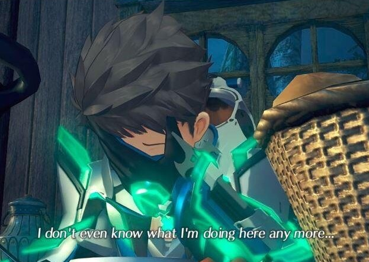

Xenoblade 1 and 2
Two Sides of the Same Coin
Spoilers for Xenoblade 1, 2, and Torna
This isn't so much a formal writeup as it is a collection of disorganized and incomplete thoughts. I originally wrote this shit in like, February 2022, so there is no mention of Xenoblade 3, but obviously that game's existence affects a lot of what is said here. Regardless, I didn't want to just let this shit rot on my hard drive, so here it is I guess! I'll probably revisit this and integrate Xenoblade 3 at some point in the future. Enjoy my shitty "analysis"!
Nisan

In Xenogears, there's a symbol that permeates throughout the entire work - the symbol of Nisan's church, a male and female pair of one winged angels with their arms outstretched, divine light between them. It's not complexity that makes this symbol interesting, since it's as explicit as can be - two halves that need each other to be whole. What's truly amazing about it is its thematic integration with every single aspect of the game, even down to its real life creation - the project being headed by the pair of Tetsuya Takahashi and his wife, Soraya Saga.
Xenoblade 1 and 2 inherit the one winged angel symbolism from their progenitor - not just internally with their stories, but in their external characteristics as games. They're a pair of total opposites that are imperfect, incomplete, and worse without each other, which makes the incessant debate over which game is "better" incredibly ironic.
That's not to say either game is exempt from criticism though, rather when people entirely disregard either one for whatever reason, they lose out on a large part of what makes these games interesting to begin with. Viewing the two as individual parts of a larger work makes both far more meaningful - on their own, neither is particularly special, but the interplay of characters and themes between the two games is unlike anything else. Mirroring Xenogears' one winged angels, the games themselves are two sides of the same coin, thesis and antithesis, with the complete message lying in the synthesis between the two.
Xenoblade 1
Shulk
A common point of criticism I see levied towards Xenoblade 1 quite often is directed at Shulk. People point out his seeming lack of development throughout the game, or even get mad at certain actions he takes. The scene where he spares Metal Face always gets a lot of flak, and while I agree it could have been handled better by having some actual consequences for Shulk's decision to spare him, I feel a lot of the criticism stems from a fundamental misunderstanding of what Shulk's arc, and even the entire game, are about.
Too often people see Shulk's arc (and by extention Xenoblade 1) as a "revenge bad" story. Shulk sets out with the goal of revenge, and by the end of it has forgiven his former enemies, so clearly that's where all the character work and themes are, right? Almost immediately after realizing that Faced Mechon are Homs, Shulk's already made up his mind that killing them is wrong. That can't be his arc, there's no change! He already held the belief that killing sentient life is wrong at the start of the game, and he keeps it at the end, even showing remorse for the inevitable killings he does cause, it's not something he has a realization of halfway through his story. Now, can you say Shulk is being incredibly naive and even stupid with his pacifism? Sure, but like it or not that's a trait the writers gave him. Either way, my point here is that Shulk, and Xenoblade 1, are not about revenge, at least not primarily. I'd go as far as to say the entire revenge story is a bit of a red herring, that most don't escape from.
Shulk's true central conflict is about freeing himself from the influence of Zanza, a character who shows up halfway through the game and really only gets his true characterization in the last 10%. That considered, it's hard to blame anyone for thinking Xenoblade 1 is a story mostly about revenge on their first playthrough, and while Shulk definitely feels some resentment towards the Mechon, on repeat playthroughs it's made explicitly clear that it comes from Zanza influencing Shulk to eliminate Mechonis for him. With a fresh perspective on a second playthrough, a lot of these revenge moments are recontextualized as Shulk battling for control from the depths of his psyche, asserting his (Shulk's) belief in the sanctity of sentient life against Zanza's bloodlust. This might seem like a weird distinction to make "oh so it was just Zanza having all the bad thoughts! Like that changes his arc at all.", but it really does drastically alter how we can interpret and understand the game's story. Zanza's really trying to use Shulk's body as a vessel to eliminate the biggest obstacle to his goal of recreation - the Mechonis.
Egil
Quick diversion here to talk about Egil, since he's the leader of Mechonis. As anyone with half a brain knows, Egil is supposed to be a tragic mirror image of Shulk, which (yawn) reflects the recurring duality symbolism once again. They both share the same goal, to stop Zanza from recreating the world. They differ in approach though - Egil believes the ends justify the means. Evil as it is, Egil's plan was the only solution that posed any possible threat to Zanza, hence why Zanza instilled these feelings of vengeance into Shulk in the hopes he'd strike Egil down for him.
As Shulk stands over Egil ready to kill, we can outright hear the voice of Zanza - the same one that Shulk mentioned at the beginning of the game - whispering in his ear to kill Egil. I don't want to dedicate too much here to defending this game's story, but I have to comment on the criticism I've seen of this scene. I see a lot of people say that it doesn't really make sense for Egil to renounce his goal of massacring the people of Bionis through Talk no Jutsu, but again, that's really a fundamental misunderstanding of Egil - his goal is to stop Zanza's curse, not to massacre everything living on Bionis. And he doesn't renounce his means because Shulk convinces him with the power of friendship, it's the fact that Shulk has retained his sense of self against Zanza's influence! Shulk ceasing to fight Egil is an act of rebellion against Zanza's wishes, one that establishes Shulk is in control, which helps Egil realize the curse can be broken without his genocide plan. You can find the scene melodramatic, sure, but to say it isn't internally consistent is just wrong.
You can even hear Alvis saying, in this same scene, that Shulk must “Find his own Monado!”, which triggers Shulk to recall everything he's experienced thus far. The experiences that have made him into who he is now and bonds he's forged along the way. At this point Shulk's development is essentially complete, when he's revived after Zanza's departed his body he has fully come into his own as a person, and his attainment of the True Monado in the final fight is just a physical manifestation of that will. His journey from a passive character to one with volition, not only literally allows him to become a God, but internally allows him to become the arbiter of his own life. Thus his rejection of Godhood for a simple life with the people he loves affirms his self determination. Xenoblade isn't about revenge, it's about the individuation all of us attain through interacting with others. Our constant unconscious, internal dialectic, shown through Shulk and Zanza The game's combat mechanics - changing the passage of fate, characters having their own unique “Talent Arts”, and “Chain Attacks” whose power is based off of the strength of your relationship with your party - are all masterful thematic representations of this within the gameplay.
Xenoblade 2
Blades and Drivers
Carrying on from the one winged angel symbols of Xenogears and the opposing Bionis and Mechonis from Xenoblade 1, Xenoblade 2 brings in the concept of Blades and Drivers for its overarching binary. Bionis and Mechonis are established as fundamental to the world of Xenoblade 1 by being the literal terrestrial foundation of it, and Blades do the same by being the core building block of Alrest's ecological system (although this fact isn't revealed to the audience until the game's end). Again, they're shown to be “two sides of the same coin” - Blades carry memetic data, whilst drivers carry genetic data - but both ultimately need each other to function properly.
If you're into Jungian psychoanalysis (or have played pretty much any JRPG), you're probably familiar with the concept of a “shadow”. If you aren't, your shadow is part of your unconscious, essentially a suppressed side of yourself that reflects your latent desires. The obvious manifestation of this concept comes in Pyra and Mythra. After the trauma inducing events of the Aegis War 500 years ago, Mythra constructed Pyra to function as her shadow. Mythra can't cook, so Pyra's a great cook. Mythra's prickly and temperamental, so Pyra's overly kind and calm. This much is pretty obvious to anyone who's played the game, but the concept of a shadow is applicable in more than just the Aegis' character.
Blades in general function as an embodiment of their Driver's shadows. For example, Nia's lack of trust and longing for a place to belong is embodied in Dromarch's devotion and loyalty, and Morag's restrained masculinity is contrasted by Brighid's outward femininity. Blade and Driver thus represent two opposite halves that create something greater than themselves when combined, a dope allegory to portray the theme that our bonds are what make us stronger, not in spite of, but because of our distinct characteristics. (I am noticing a trend) Only by working together can Drivers and Blades reach their full potential, something that's eloquently reflected in the game's combat with Fusion Combos and the affinity system.
It's important to note that everyone in the party utilizes Blades and Drivers in their intended manner, even Nia and Zeke, who are Flesh or Blade Eaters respectively and could easily just fight on their own instead choose to fight as Driver and Blade out of their own volition. This stands in stark contrast with all the major antagonists of the story, who reject the polar pairs of Driver and Blade to instead seek an all encompassing monistic power by utilizing their own -Eater weapons (beyond the opening few chapters of the game at least). Representing the difference in ideology between the party and Torna regarding duality subtly but effectively.
This concept of dual opposites changing each other through their interactions is shown in the character's arcs as well. I don't want to take the obvious example of Pyra and Mythra, as it's been talked about to death, so take Zeke and Morag for example - at the start of the game these two characters couldn't be more different from each other, at least externally. Zeke is putting up a front of a zany and wacky chuuni to cope with the fact that he's become disillusioned with life, and Morag's a stoic general hiding her true feelings behind the mask of “duty”. By the end of the game though, both have dropped their external personas, at least a little bit, and changed on their journey through interacting with each other and people different than them. Zeke's become a more serious mentor figure to Rex, and Morag's more open about her sensibilities and even cracks jokes. They've become "whole", through accepting their own dualistic nature, not rejecting it.
Rex
Starting this section off with a criticism like I did with Shulk, since it's a good topic to bounce off of into further discussion. Lots of people complain about Rex being too static, or even boring as a protagonist, and when I first beat the game I agreed with them. Rex is static, but his staticity isn't really a flaw. Rex catalyzes change in everyone around him - Mythra, Nia, Malos, Jin, Zeke - every single major character really. It's also important to remember that Xenoblade 2 is as much Mythra's story as it is Rex's. Obviously he's not the deepest character of all time, but does he really need to be? And despite all his supposed lack of change, he does undergo major development throughout the story, albeit more subtly than Shulk's wild fluctuations. He tempers his idealism, learns how to truly love others, and constantly challenges his relationship with power.
At the start of the game, Rex is already relatively wise. This is a 15 year old kid who works hard and makes good money to voluntarily send the majority of it back to his hometown. He's lost both of his parents and never once sulks or complains about it, he takes it in stride. Not to say he's without flaws though, he's still an archetypal shonen hero who throws himself into danger to solve everything on his own. He's a bit naive, thinking he can live without being involved in conflict at all. A lot of his flaws are reflected in Pyra and Mythra as well - his brashness is contrasted against Pyra's timidity and his impulsive nature with Mythra's methodical thought process.
In fact, his relationship with Pyra and Mythra (Referring to them interchangeably from now on for hte sake of simplicity) serves as a benchmark for his development throughout the game. Or rather, his thought process and beliefs manifest through his relationship with them. In the early chapters, Rex doesn't want anything to do with conflict of any kind - he just wants to get to Elysium. This changes in Chapter 3, where Vandham explains to him that it's naive to think you aren't involved in a war one way or another. Vandham continues to mentor Rex throughout the chapter, and later tells him that war isn't about right or wrong, only power, and being afraid to use power can only lead to failure.
His words call back to the events of Torna, where Addam failed in his journey to subdue Malos as a result of his fear of the Aegis' power. He does make efforts to connect with her, but ultimately Addam treats Mythra as a ticking bomb of mass destruction, which makes him unable to awaken Pneuma, and ultimately causes the sinking of Torna. Naturally, Mythra starts to see herself as a weapon of mass destruction afterwards. Rex, however, sees the Aegis' power in the complete opposite way from Addam and Mythra - he sees it as the power to protect. But, that still isn't quite right.
After Vandham's death, Rex realizes conflict is unavoidable, and so he starts fighting, and using the Aegis' power to do what he thinks it's made to - protect his friends. This doesn't really work out for him though, he winds up losing Pyra, at Tantal and is once again lost and searching for answers. In Chapter 7, after going through Spirit Crucible Elpys, he meets with Addam and has another crucial conversation. Addam questions him as to why he wants power, and his response is a natural one - to protect. Addam reprimands him for this, “There is a limit to what one man can do” after all. He explains Mythra's fear of her own power, and finally admits his own shortcoming from his fear of her power.
It's here where Rex realizes that the Aegis' power isn't to protect, it's him who has to protect her - physically, and emotionally. Thus his answer changes, and he displays his increased maturity by no longer charging headfirst into the next confrontation with Malos and Jin - he isn't fighting for his friends anymore, he's fighting for the Aegis.
All of this development and thematic buildup finally culminates in the final battle against Malos. At this point, Malos has stopped being and seeing himself as “a guy whose sole purpose is to destroy”, and becomes a trial humanity must overcome to justify their existence. “If that's all you got, humanity's never gonna chang!” Either he defeats Rex and company and proves humanity was never worth saving, or the party defeats him and catalyzes change - either way Malos receives a favorable outcome. The winner will be decided solely by power and sheer will.
It's here where Rex finally gives his true answer to the question he's been asked throughout his journey as well. “'Why are you doing all this?'' I'm doing it for myself! If it makes people happy, puts smiles on their faces, that's my role in this world!” Rex finally has the strength to admit he's fighting for himself, and later on has to come to terms with the fact that he can't do everything himself - by letting Pneuma go be the hero instead. He's finally, truly, “fighting his own war”.
And that's what really resonates with me about Rex - he's not particularly deep, but his arc is really about him learning to disconnect himself from his friends, and learn to fight for himself instead, a theme that isn't all too common in fiction. It's his philosophy that separates his success from Addam's failure, his optimism and desire for change from Malos' pessimism and want for stagnation.
So what is Xenoblade 2 at its core? Well, this is kind of a nonanswer, but it's a lot of different things. It's an allegory for Plato's cave, a cliche story about the power of friendship, and a simple tale of how a boy met a girl. But at the very heart of the work, what I believe Takahashi and Monolith Soft were really making with Xenoblade 2, is an absolute and total inversion of the game that came before it.
Interlinked
Klaus
Despite his limited screen time in both games, Klaus is one of the most interesting and important characters in the series. The original Klaus, before the “reset” reflects all the major antagonists in the series - he's quite literally detached from his fellow man, he's in a space orbit station where all he can do is gaze upon humanity on the macrocosmic scale, as many scientists do. He sees nothing but the macrocosm of humanity's stagnation, and so he despairs. He uses the Trinity Processor to “birth a universe”, and hopefully “move mankind one step closer to the divine”. And thus, his body and consciousness is split in 2 halves. The half sent to the world of XB1 is vindicated by the success of his experiment and becomes the egomaniacal Zanza, whereas the half that remains in XB2 is humbled and overcome with guilt at the failure of the experiment and seeks atonement.
Something commonly pointed out is the difference in presentation of Klaus's experiment between Xenoblade 1 and 2. In Xenoblade 1, Klaus is portrayed as a sort of crazed scientist, whereas in Xenoblade 2 he's much more sympathetic and added context allows us to understand his perspective more. This is a clear retcon, I can't really dispute that fact, but I'm going to extrapolate a bit and say that the fact that Monolith didn't change the scene in Definitive Edition to match 2's version means that keeping these two scenes different in tone is intentional. Assuming so, the difference in portrayal between the two does a great job at emphasizing the running theme of differing perspectives, and further establishing Klaus's schismatic nature.
What's really interesting though, is that even the Architect isn't truly “benevolent”. Even after his destruction of the planet, he continues to keep his macrocosmic view of humanity - once rebuilding it and seeing the world has turned out exactly the same as before, he's kind of disappointed and takes a backseat. It's only when he's presented with the microcosmic good - Rex and his party, that he starts to question his original thought process.
The Architect and Zanza are two sides of the same person, Klaus. You could say the Architect is an embodiment of Klaus's superego, while Zanza is his id/shadow. Klaus's character represents the inherently dualistic nature of man, and is also symbolic of the rift between the two dimensions.
Within Cells Interlinked
Like Zanza and the Architect, Bionis and Mechonis, Blades and Drivers - Shulk and Rex themselves are diametrically opposed. At the start of Shulk's journey, he's a timid and pessimistic person, whereas Rex is bold and optimistic. Not only are they antithetical in character traits, but their stories also embody this polarity. Their dispositions at the start of their quests are total opposites - Shulk's starts with anger and grief, while Rex's starts with love and hope. Shulk's initially on a revenge mission, Rex is trying to fulfill a promise. Shulk's wildly fluctuating, Rex is a bit static. Despite these differences though, they both ultimately arrive at the same point.
Shulk's initially a very passive character, whose main conflict revolves around becoming more assertive, independent, really becoming his own person . At the start of the game he doesn't have much initiative, but the characters around him, friend or enemy, help him come into his own as a leader and hero, freeing him from Zanza's influence, and helping him to assert himself in the world. In the first few hours of the game, Shulk hides his visions from his party, but after Reyn scolds him for it and it endangers the party, he adapts and loses some of that timidity. In fact, Shulk often finds himself being reaffirmed by his friends to push onwards on his journey.
While Shulk needs his friends to be his emotional support, Rex is his friend's emotional rock. His unrelenting optimism fuels change in everyone around him - in a lot of ways Rex resembles Reyn a lot more than Shulk. Rex is the reason for the entire party to keep moving forwards. Nia has serious trust issues, but Rex gets her to trust him and learn to love the world. Pyra's suicidal, Rex reinvigorates her. Zeke's jaded, and Rex forces him to become a mentor figure. That's why the entire party freaks out so much when Rex gives up for the first time, they need him. Shulk is shaped and changed by his party, Rex shapes and changes his.
Their stories are both ultimately about achieving their own self determination, even if they take totally opposite routes to get there. All of their development culminates in two key moments for both - Rex's awakening of Pneuma parallels Shulk's revival from Zanza as the moment they achieve their own self actualization. At this point in each story, their development is, for the most part, complete. They're just missing one final push, which comes in both game's endings. Shulk's acquisition of the True Monado is parallel to Rex letting Pneuma go - both represent the enlightenment they've achieved on their journey, and essentially cause the creation of a new world. While Shulk gains his Monado, Rex loses his Aegis, further emphasizing the duality between the two.
Quick diversion from Shulk and Rex for a bit to talk about the antagonists of both games. Xenoblade never really presents its (main) antagonists as straight up evil, even the ones who get close aren't quite there. Zanza would have been pure “evil”, if not for the new perspective we gain in XB2 that adds many layers of depth to his character. Malos as well might initially just seem “evil for evil's sake”, but deeper analysis into his character and motivations reveals he was deeply tormented and seeking his identity until the very end. When it comes down to it, the only real universal “evil” in these games is being a dogmatic proponent of your own ideology, or refusing to engage in a dialectic.
All of the antagonists never challenge their own beliefs until the protagonists force them to. Egil never considers another possibility to stop Zanza, Jin and Malos are wholly convinced of their righteousness, and Klaus, which could be seen as the “original sin”, was unwilling to listen to Galea's perspective and challenge his thought process. Shulk and Rex's embrace of uncertainty and change stands in direct contrast to every major antagonist of the series - who all claim to have some form of ultimate moral knowledge and seek stagnation. You could say they seek gnosis, or the Monad, an all encompassing monistic power.
In contrast, both Shulk and Rex admit that they're fools - and by doing so they can constantly evolve and adapt their worldview. That's why Shulk “has to find out why Bionis and Mechonis have to keep fighting” and Rex always shows mercy towards Jin and Malos. They fight for understanding to further evolve their own beliefs, not affirmation for a twisted sense of righteousness. They reject the monistic power, instead choosing duality, and as such stand in opposition to all the antagonists. They come to believe that true freedom doesn't lie in being right, but rather being willing to admit you were wrong.
Despite starting at diametrically opposed points, Shulk and Rex end their arcs sharing many of the same values, a change brought about by clashing ideals, exchanging perspectives, and sharing moments with both their friends and enemies. Seeking to understand their enemy's perspective is a commonality they share throughout their stories, and ultimately they arrive at the same philosophical conclusion through “fighting their own wars” - exactly what we should be doing as players whenever we engage with any game.
It's not just their arcs that are parallel though, their journey's structure follows the same parallel universe concept. In a vacuum, we'd probably brush this off as both following an archetypal video game structure - nobody's comparing every game with an ice level in it, but when you consider the fact that these two are explicitly stated to be occurring at the same time in parallel dimensions and take into account the plethora of other intertwined characters and themes, it's not conceivable that this wasn't intentional on the part of Monolith.
Gormott obviously parallels Gaur Plains as the grassy starting area - that one's pretty obvious and relatively inconsequential. Afterwards comes Uraya and Satorl, both of which are swamplike environments that feature ethereal plant life that lights up at night. From there, they diverge a bit, Xenoblade 1 going into tropical and lush Makna forest, while Xenoblade 2 goes into the wasteland desert of Mor Ardain. You could argue they're total opposites and that connects thematically as well, but that's a bit too schizo even for me.
They quickly reconverge though, and the next sequences are strikingly similar. Eryth Sea and Leftheria are both archipelago-like environments that take the party to a capital city of sorts, Alcamoth and Indol respectively. Afterwards come short areas that come with a lot of story revelations - Prison Island and Temperantia, both of which are followed up with snowy areas in Valak and Tantal. Sword Valley and Galahad can be analogous to Elpys and the Cliffs, and at the end of these areas both parties experience a “great fall”, reaching the Fallen Hand and the Land of Morytha respectively. They both have strong character moments there and then begin their climb back up through an alien environment, Mechonis and the World Tree, arriving at the remains of a ruined city in Agniratha and Elysium. Xenoblade 1 diverges here, perhaps because Shulk now exists outside of the passage of fate while Rex remains firmly within it (shown because Mythra foresees all the events of XB2 at the end of torna) but regardless the structural parallels are still clear. Though the journey's structure and protagonist's conclusions are parallel, the inverted perspective between the two becomes even more clear when you compare the protagonist and antagonist's goals in both games.
Shulk's a mirror image of Malos in a lot of ways. Both wield Monados, have been influenced by an external force for the majority of their life (Zanza, Amalthus), and seek to kill Klaus to assert their will on the world. This parallel is even more clear when you consider Xenoblade 1 and 2 take place at the same time - which roughly lines up the moment of Shulk gains his freedom from Zanza via the awakening of his True Monado with Malos's acquisition of freedom from Amalthus by becoming the trial humanity must overcome to justify their existence.
This ties back into the overarching theme of duality and perspectivism, but it also raises a question on the concept of transcendental morality - is killing Klaus the right decision? In XB1 it's our hero who has to kill the demiurge to obtain his freedom, in XB2 it's the villain. Obfuscating morality between the two separate games is a genius way to make us as players experience the same kind of moral ambiguity that the characters experience through their journey and emphasizes the perspectivist concept the games want to get across. At the end of the day, much like the cutscenes of Klaus's experiment and who's right in war, it's a matter of perspective.
Two games in the same series sharing similar themes isn't a particularly earth shattering revelation, but I draw attention to it because of how Shulk and Rex's inverted journeys perfectly fits the mirrored structure of their two worlds. The way these themes are embedded into the core of the games from Shulk and Egil's conflict, to both battle systems, and even something as trivial as the difference in portrayal between cutscenes. When looking at the two games as part of a larger whole, we uncover loads of thematic connections that emerge through comparing Shulk and Rex's journeys.
To cap off, it's incredibly interesting how many of the actual games' traits are “mirrored” - obviously many of these were more than likely not intentional, but I don't think that takes away from the observation's value. Xenoblade 1 is incredibly polished, while Xenoblade 2 is a lot more conceptual. 1 is very plot focused, 2 is character driven. 1 has muddy colors (though a bit of this was lost in the transition to DE), 2's a lot more vibrant. There's more of course, both have shit tutorials and nopon for example, and again, none of these are strong argumentative points, but treated as a coincidental cherry on top of the thematic messages, these inverted characteristics genuinely do add to the series' themes.
Dr. Klaus or: How I Learned to Stop
Worrying and Love the Dichotomy
Contrary to what I said earlier, the symbol I think represents the series best is not the pair of one winged angels from Xenogears. I mean, it is, but it's also founded in one that most normal people (people who don't read about weebshit games on html sites) actually know of - the Taoist Yin Yang symbol - two seemingly opposing forces that are actually complementary and interdependent on one another. One winged angels, Bionis and Mechonis, Blades and Drivers, Shulk and Rex, Zanza and the Architect, even the games themselves are all representations of this concept. And despite all of the Gnostic and Christian imagery used throughout the series, looking at the game's themes under a Taoist lens does reveal some interesting parallels, that honestly, I am not qualified to properly examine so I won't.
It's not just the characters in these games that are changing their perspective and having to deal in dualities. All of the Xeno games have a pretty striking quirk - you need to replay these games to gain full context and understanding. Even Xenoblade 1, which has the most straightforward initial playthrough, has a lot of its themes and even entire character arcs hidden behind layers you can only peel back with the increased context of a new playthrough. Xenoblade 2 takes this perspective shifting concept a step further. If someone plays 2 for the first time with no prior knowledge, and then comes back to it after playing Xenoblade 1 and Torna, it's practically a completely different experience. Takahashi constantly recontextualizes his games in this way, and it's a really smart thing to do, considering the series' themes.
I'm no expert on Eastern philosophy, so take this with a large grain of salt - but the Zhuangzhi has a running theme about how a change in perspective can lead to enlightenment. Gaining new perspectives through replays, seeking new vantage points and experiencing duality by playing both games - we, as players, are going through the same paces that Shulk and Rex are. It's subtle yet extremely intelligent meta storytelling. Both of these games form a whole greater than the sum of its parts, through thematic synthesis, meta storytelling, and even mechanical flaws. The fact that people can play these games with zero conscious knowledge of this overarching metanarrative at play, and still grasp it intuitively, makes them an incredible feat in video game storytelling.

If you actually read this shit this far I'm sure you probably feel like Rex here rn. Click on him to go back to the main page